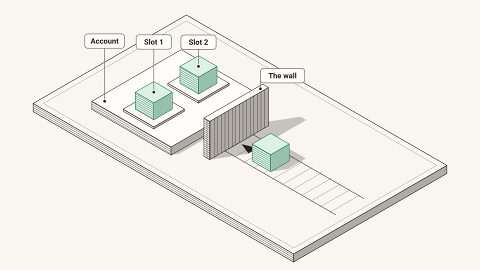

No. 2
The tick
A timer wakes the dispatcher.†
Every few minutes the dispatcher reads the tracker, the pull requests and the running sessions. Then it starts what should be running and is not.
† Machinery ships. Running unattended is planned.
No. 3
The slots
Two slots per account, and the wall.
Each subscription account holds two sessions at once. When an account reaches its usage limit, that is the wall: the account stays out of every launch until the wall resets.

No. 4
The ledger
The drive keeps its ledger on the pull request.
One comment records the round, the last head checked and every parked question. Another machine reads it and picks up where the drive stopped.